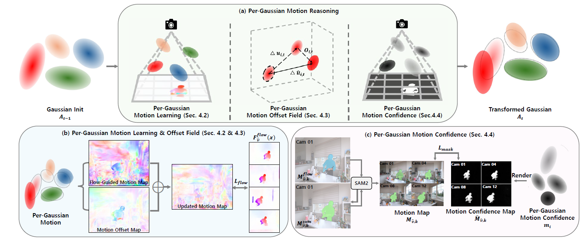

Online reconstruction of dynamic scenes aims to learn from streaming multi-view inputs under low-latency constraints. The fast training and real-time rendering capabilities of 3D Gaussian Splatting have made on-the-fly reconstruction practically feasible, enabling online 4D reconstruction. However, existing online approaches, despite their efficiency and visual quality, fail to learn per-Gaussian motion that reflects true scene dynamics. Without explicit motion cues, appearance and motion are optimized solely under photometric loss, causing per-Gaussian motion to chase pixel residuals rather than true 3D motion. To address this, we propose MoRGS, an efficient online per-Gaussian motion reasoning framework that explicitly models per-Gaussian motion to improve 4D reconstruction quality. Specifically, we leverage optical flow on a sparse set of key views as lightweight motion cues that regularize per-Gaussian motion beyond photometric supervision. To compensate for the sparsity of flow supervision, we learn a per-Gaussian motion offset field that reconciles discrepancies between projected 3D motion and observed flow across views and time. In addition, we introduce a per-Gaussian motion confidence that separates dynamic from static Gaussians and weights Gaussian attribute residual updates, thereby suppressing redundant motion in static regions for better temporal consistency and accelerating the modeling of large motions. Extensive experiments demonstrate that MoRGS achieves state-of-the-art reconstruction quality and motion fidelity among online methods, while maintaining streamable performance.

Our approach incrementally updates Gaussian attributes while explicitly modeling per-Gaussian motion using sparse motion cues. A motion offset field compensates for discrepancies, and a learned motion confidence from view-consistent masks suppresses static regions and focuses learning on dynamic motions.
@misc{2603.25042,
Author = {Wonjoon Lee and Sungmin Woo and Donghyeong Kim and Jungho Lee and Sangheon Park and Sangyoun Lee},
Title = {MoRGS: Efficient Per-Gaussian Motion Reasoning for Streamable Dynamic 3D Scenes},
Year = {2026},
Eprint = {arXiv:2603.25042},
}